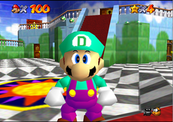

<article class="row">
  <section class="small-12 large-8 columns page-content">

<h2>Welcome to Drew Naylor's website!</h2>
  
<p>Hello! My name is Drew Naylor. Recently I decided to port my Weebly website to GitHub Pages and, well, I did. Back in 2011 I decided to start editing Super Mario 64 with my good friend, Dustin Herl. His web site was also created with Weebly; mine was originally as well but now it's on GitHub Pages using the <a href="https://github.com/chrisanthropic/slim-pickins-jekyll-theme" target=_blank>Slim Pickins Jekyll theme</a>.

<br>
<br>

On this website I have <a href="/pages/rom-hacking-pages/cheat-codes.html">Gameshark cheat codes</a>, links to <a href="/pages/rom-hacking-pages/rom-hacks.html">ROM hacks</a>
 (In<a href="http://www.smwcentral.net/?p=viewthread&t=73147&page=1" target=_blank> BPS Patch format</a>), links to 
 <a href="/pages/rom-hacking-pages/editors.html">editors</a>, links to
 <a href="/pages/rom-hacking-pages/emulators.html">emulators</a>, and even a 
 <a href="/blog/">blog</a>!</p>

<br>
<br>
<p>This is Super Drew 64:</p>
<p>
 
Mario's "M" has been turned into a "D". The red and green eye texture replaced the regular one.</p>
 

  </section>
    {% include asides/recent_posts.html %}
</article>